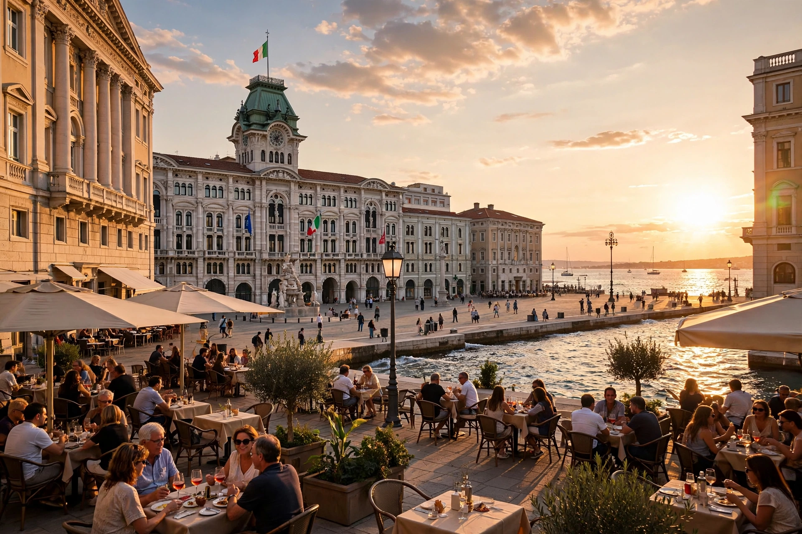

From Wikipedia, the free encyclopedia
| Trieste | |
|---|---|
 | |
| Country | Italy |
| Region | Friuli-Venezia Giulia |
| Population | about 200,000 |
| Known for | Port, coffee trade, ICTP, Miramare Castle |
Trieste (Italian: Trieste; Slovene: Trst) is a port city at the head of the Adriatic Sea, in north-eastern Italy near the border with Slovenia. It is the capital of the Friuli-Venezia Giulia region. Trieste grew rich as the principal seaport of the Habsburg Empire after being declared a free port in 1719, and its grand neoclassical waterfront, centred on Piazza Unità d'Italia, reflects that cosmopolitan, Central-European past.
The Roman colony of Tergeste stood on the site. Trieste submitted to Habsburg rule in 1382 to escape Venetian domination, and under Austria it became the empire's great outlet to the sea, home to shipping and insurance firms such as Lloyd Triestino and Generali. After the First World War the city passed to Italy; after the Second it was the capital of the Free Territory of Trieste (1947–1954) before returning to Italy, while its Istrian hinterland went to Yugoslavia — a division settled by the Treaty of Osimo in 1975.
Trieste is a city of coffee houses and literature: James Joyce lived and taught here for a decade and began Ulysses here; Italo Svevo and Umberto Saba are native Triestine writers. The white Miramare Castle, built for Archduke Maximilian, overlooks the gulf. The city hosts the Abdus Salam International Centre for Theoretical Physics (ICTP), the SISSA graduate school and a synchrotron, making it an outsized centre of research. Each October the Barcolana regatta fills the gulf with thousands of sails. The bitter bora wind periodically blasts down from the Karst plateau behind the city.